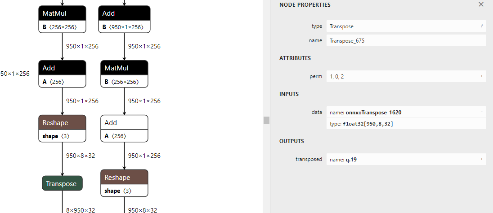
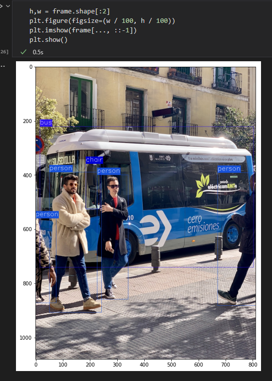

pytorch导出onnx的原则-以SwinTransformer和DETR在trt8.0.3.4部署为例
一、前言
pytorch导出onnx是通过追踪forward函数构建的计算图来实现的，然而这种构建的方式往往会由于模型的设计者没有考虑导出部署时的便捷性从而生成的onnx中算子比较冗余，比如x[x> 0.5] = 0这种inplace操作就会生成onnx的scatter算子，这个算子是不被tensorrt支持的。尽管可以采用plugin方式来实现，但其并不是一个较为有好的算法。x[x > 0.5] = 0可以转换为y = x * (x > 0.5).to(torch.float32)这种形式来避免inplace操作。此外取shape操作一般用于动态shape，这种操作在部署框架中也是冗余的应该去掉，主要原因是大部分模型除了batch size可变以外，其余维度输入都是固定的，从而对于一般的取shape操作都是可以直接由常量计算得到，从而计算得到的shape实际上可以固化为一个常量。下面根据trtpy作者提出的建议，给出导出onnx时应遵守的原则。
二、原则
- 对于任何用到shape、size返回值的参数时，例如：
tensor.view(tensor.size(0), -1)，B,C,H,W = x.shape这类操作，避免直接使用tensor.size的返回值，而是加上int转换，tensor.view(int(tensor.size(0)), -1),B,C,H,W = map(int, x.shape)，断开跟踪。 - 对于nn.Upsample或nn.functional.interpolate函数，一般使用scale_factor指定倍率，而不是使用size参数指定大小。如果源码中就是插值为固定大小，则该条忽略。
- 对于reshape、view操作时，-1的指定请放到batch维度。其他维度计算出来即可。batch维度禁止指定为大于-1的明确数字。如果是一维，那么直接指定为-1就好。
- torch.onnx.export指定dynamic_axes参数，并且只指定batch维度，禁止其他动态
- 使用opset_version=11，不要低于11
-
避免使用inplace操作，例如
y[…, 0:2] = y[…, 0:2] * 2 - 0.5，可以采用如下代码代替tmp = y[…, 0:2] * 2 - 0.5; y = torch.cat((y[..., 2:], tmp), dim = -1) -
尽量少的出现5个维度，例如ShuffleNet Module，可以考虑合并wh避免出现5维
-
尽量把让后处理部分在onnx模型中实现，降低后处理复杂度。比如在目标检测网络中最终输出设置为xywh或者xyxy，而不是一个中间结果。
三、常见问题方法
- onnx的修改
使用python中onnx库或者TensorRT携带的更为方便的onnx_graphsurgeon
.proto定义的文件，如果是使用onnx库修改时需要牢记这一点。
- onnx的简化
onnxsim可以简化onnx graph中一些常量的折叠运算，具体见官方github https://github.com/daquexian/onnx-simplifier 。
即使在使用了以上原则以后，还是无法避免生成一些冗余的常量运算。比如d = a + b - c
这里a,b,c都是常量且只有在计算d的时候用到，那么onnx计算图中只需要表示d即可，但是torch的api还做不到这一点。
- 动态shape的问题
TensorRT是支持各个维度的动态shape的，不局限于动态的batchsize，其允许用户设定多组维度供TensorRT结构优化器来选择，但是在选择最优结构的时候需要预先指定一个固定维度。此外动态shape对于一般网络而言，仅仅是batch size可变，其余模型输入的长和宽一般是固定的，因此一般情况下只考虑动态batch size的问题，也就是原则3。
- 获取onnx中间输入
onnxruntime是可以获得模型中间层结果的，具体方式还请读者搜索一下。本文给出一种更为优雅的方式，即采用TensorRT附带的polygraphy，具体网址
https://github.com/NVIDIA/TensorRT/tree/master/tools/Polygraphy
下文在DETR案例中将给出如何采用polygraphy定位哪个中间层出现不一致的情况，也就是onnxruntime结果与tensorrt结果不一致。
四、案例1-SwinTransformer在TensorRT上的部署
4.1 加载预训练权重
本文采用基于pytorch的timm库来加载分类模型和预训练权重，采用pip install timm安装，作者在做本次实验时timm版本为0.5.4。
采用如下代码记载模型
cache文件夹中。
以上代码即完成了模型的预加载。
4.2 验证分类模型精度
4.3 初步导出
verbose = True，以上代码会打印出很长的log。
4.4 修改模型代码
按照关键词onnx::Shape来搜索shape操作的代码位置，找到以后按照原则1，3修改代码。
在${PYENV}/lib/python3.9/site-packages/timm/models/layers/patch_embed.py，修改PatchEmbed的forward函数，主要是把flatten转换为view(-1, ...)。、
${PYENV}表示python环境所在目录
原版为（下文不再展示原版）
${PYENV}/lib/python3.9/site-packages/timm/models/models/swin_transformer.py，先以关键词.shape在该文件中搜索，修改完毕后再看剩余
window_partition和window_reverse修改如下
WindowAttention类的forward函数修改为
SwinTransformerBlock的forward函数修改如下:
PatchMerging的forward函数修改如下：
4.5 重新生成onnx并检查
- 如果是
.py就重新执行python xxx.py，如果是jupyter notebook，则需要重启内核。 pip install netron安装netron- 运行
netron swin-b-22kto1l.onnx查看生成的onnx，查看模型整体简洁性（主观）。
经过查看onnx结构，发现修改的onnx结构较为简洁，且支持batch size的动态shape。
4.6 在TensorRT上验证
这里使用tensorRT的封装版本trtpy，主要解决版本隔离问题和安装繁琐问题。
安装和使用详情请查看https://zhuanlan.zhihu.com/p/462980738
4.7 小结
通过对SwinTransformer模型代码的修改，使得onnx导出更为简洁。因为该模型较为简单，在导出时并没有使用onnxsim简化模型，下一章对DETR的导出将会看到所有工具的综合运用进行Debug。
此外，Transformer在CV领域已经可以很方便的落地了，并且是支持动态batchsize的。个人的直观感受时较为部署时采用SwinTransformer占用显存比较大，不过85.2%的精度也算性价比较高的模型。
五、案例2-DETR在TensorRT上的部署
5.1 下载预训练模型并验证模型效果
这里采用集成的mmdetection库中的DETR。github地址为https://github.com/open-mmlab/mmdetection
为了方便修改代码，mmdetection需要采用clone仓库，python setup.py develop方式安装，即
- 在此之前读者还请阅读 https://github.com/open-mmlab/mmdetection/blob/master/docs/en/get_started.md 了解全部安装步骤。
- 从 https://github.com/open-mmlab/mmdetection/tree/master/configs/detr 下载预训练权重并记录path备用。
- 安装onnxsim，polygraphy，onnxruntime库
修改mmdetection/tools/deployment/pytorch2onnx.py，让其支持再skip-postprocess条件下支持onnxsim
在判断语句那里加上如下代码
export_detr_onnx.sh
onnx_graphsurgeon清理一下。
5.2 动态batchsize实现很难

如上图为生成的onnx，实际上这个onnx已经可以onnxruntime中运行了。但是batch size设置为动态的却很难，主要原因是后续的操作不能确定哪个维度设置为-1。 Reshape操作中如果是动态维度，给定的shape中要有一个值为-1，但是如上图所示，Reshape+Tranpose操作以后，打乱了batch size所在的维度，后续的reshape操作肯定可以修改，但是哪个维度为-1不太好设定，这个留到后续再来探索。5.3 加上后续位置信息解码过程
在前面小节导出的onnx中由于skip-postprocess的存在，并没有对中间输出进行解码，这里通过修改检测头的forward函数加上它，找到mmdetection/mmdet/models/dense_heads/detr_head.py中DETRHead类的forward方法，
修改如下：
Line24-Line28是新增的，用于解码中间信息，直接输出坐标信息和分类信息。
5.4 使用onnxruntime验证
- 测试图片如下：
读者可以右键存为car.jpg
- 分析模型config文件，得到数据预处理步骤
- 给出onnxruntime验证代码
1 2 3 4 5 6 7 8 9 10 11 12 13 14 15 16 17 18 19 20 21 22 23 24 25 26 27 28 29 30 31 32 33 34 35 36 37 38 39 40 41 42 43 44 45 46 47 48 49 50 51 52 53 54 55 56 57 58 59 60 61 62 63 64 65 66 67 68 69 70 71 72 73 74 75 76 77 78 79 80 81 82 83 84 85 86 87 88 89 90 91 92 93 94 95 96 97 98 99 100 101 102 103 104 105 106 107 108 109 110 111 112 113 114 115 116 117 118 119 120 121 122 123 124 125 126 127 128 129 130 131 132 133 134 135 136 137 138 139 140 141 142 143 144 145 146 147 148 149 150 151 152 153 154 155 156 157 158 159 160 161 162 163 164 165 166 167 168 169 170 171 172 173 174 175 176 177 178 179 180 181 182 183 184 185 | |

5.5 TensorRT上验证
这里本文继续采用trtpy，注意由于本文的代码时放在一个jupyter notebook中，所以复用了上一小节的变量。
det_labels, det_bboxes_with_scores这两个顺序可能会反，读者需要自行调换。
print(output_engine)输出全0，会让人很头疼，怀疑是不是哪一步搞错了。这个时候就需要输出每一层的中间结果打印了。
5.6 调试模型中间结果
由于onnxruntime输出结果时正确的，那么我们有理由相信其中间结果也是正确的。进而可以转换为TensorRT与onnxruntime中间层不一致问题。
此时，我们可以借助polygraphy工具来完成对中间层输出的校对。
polygraphy安装命令，polygraphy作者安装的版本为0.35.2
debug_detr.sh
${PYENV}/lib/python3.9/site-packages/polygraphy/mod/importer.py，找到lazy_import函数，在第一句assert语句下面
加上这句话
此外还可能碰到说tensorrt没有__version__，这个时候需要修改trtpy中的tensorrt。
找到${PYENV}/lib/python3.9/site-packages/trtpy/tensorrt/__init__.py 搜索__version__该行然后去掉注释。
经过以上过程，重新执行上面的生成脚本得到两个json文件，采用如下代码比较中间结果
6x?x?x?x，6-1 = 5.
5.7 trtpy的小bug
经过上面的修改，tensorRT矩形框输出正常了，但是分类结果全为0，原因在于trtpy将输出的int32类型按照float32解析了，从而造成解码错误。一个讨巧的方法是在mmdetection/mmdet/models/dense_heads/detr_head.py中DETRHead类的onnx_export方法的返回值加上类型转换，即将return det_bboxes, det_labels修改为return det_bboxes, det_labels.to(torch.float32)，然后重新生成tmp.onnx和tmp_new.onnx，使用原生tensorRT的用户可以自行忽略这一点。
六、总结
本文系统梳理了onnx导出的原则和具体调试技巧，希望能给遇到相似错误的读者给以启发。作者会继续研究DETR的动态batch size问题，欢迎有兴趣的小伙伴一起讨论。
七、参考链接
- https://zhuanlan.zhihu.com/p/436017991
- https://github.com/DataXujing/TensorRT-DETR
创建日期: January 21, 2024